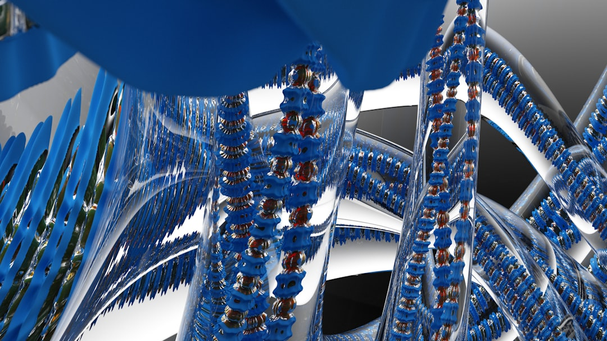

一、繁荣的数字，尴尬的账本
先看几组让投资人血压飙升的数字。
2026年第一季度，全球AI Agent市场规模达到58.3亿美元，比去年的44.2亿涨了32%。51%的企业已经把AI Agent投入了生产环境。听起来形势一片大好。
但你把视角切换到财务报表，画风就变了。
麦肯锡的调研显示，将近80%部署了AI的企业，净利润没有任何改善。MIT的研究更狠——95%的企业还没有从AI投资中获得回报。
你没看错。
十个里面有九个半，在亏钱。
这就像一条高速公路，路面铺得很漂亮，收费站也建好了，但跑在上面的车，有的在原地打转，有的直接翻进了沟里，只有极少数知道自己要去哪。
Fortune的一份调查揭露了更尴尬的真相：CFO们私下承认，2026年因AI裁掉的岗位预计达到50万个，是2025年5.5万个的9倍。但同时，60%的招聘经理承认，他们之所以在裁员理由里写"AI替代"，不是因为AI真的能干了，而是因为这个理由比"我们没钱了"更体面。
只有9%的企业表示AI已经完全替代了某些岗位。
"AI替代论"，其实是2026年最大规模的一次企业公关话术。
你被裁了，不是因为AI太强，是因为公司没钱了。但HR告诉你"被AI优化了"，你还觉得自己赶上了时代洪流。
这叫什么？这叫AI Washing。用AI给裁员上了一层金粉。二、AI的三次进化：从教鹦鹉说话，到给猛兽装笼头
理解2026年AI Agent行业在发生什么，你得先理解AI协作模式的三次进化。这三步，浓缩了整个行业从"玩具"到"工具"再到"同事"的蜕变。
第一代：提示词工程（Prompt Engineering），2022-2024年。这个阶段，你和AI的关系像教一只鹦鹉说话。你精心措辞，它模仿输出。你说"请帮我写一封正式的邮件"，它吐出一封像模像样的邮件。全部交互发生在一次对话里。
那时候的核心竞争力是什么？写好一个提示词。
荒谬吗？一个万亿级产业的竞争壁垒，是一段话写得好不好。
第二代：上下文工程（Context Engineering），2025年。人们发现光写好提示词不够。AI的上下文窗口就像一个人的工作桌面——你得把正确的文件、正确的数据、正确的背景信息摆到桌上，它才能干好活。
一个比喻：大模型是CPU，上下文窗口是内存，而你是操作系统，负责把正确的信息加载进去。
这个阶段的核心问题变成了：模型能看到什么。
第三代：驯服工程（Harness Engineering），2026年——也就是现在。注意，画风突变了。
前两代都是"人指挥AI干一件事"。第三代不一样。AI Agent要自己规划任务、自己调用工具、自己判断结果、自己决定下一步。它从一只听话的鹦鹉，变成了一匹能跑的野马。
问题来了：野马很快，但它会踩人。
Mitchell Hashimoto在2026年提出了一个公式：Agent = Model + Harness。
Model是马的腿，Harness是笼头和缰绳。
没有Harness的Agent，就是一匹没有缰绳的烈马在闹市里狂奔。它可能跑对方向，也可能一头撞进商店的橱窗。
Harness Engineering关心的不是"AI能做什么"，而是"AI不该做什么"、"AI做错了怎么发现"、"AI做完了怎么验证"。
这意味着一个根本性的转变：AI行业的瓶颈，已经从"智能"转移到了"控制"。最聪明的大模型，如果不可控，不仅不值钱，还是个定时炸弹。Anthropic的Mythos模型刚发布就被安全研究人员标记了重大风险——它挖漏洞的速度比防御者修漏洞还快。英国央行甚至为此紧急召集了银行和保险公司开会。
不是AI太笨了用不了。是AI太聪明了，你不敢用。
这就是为什么我说，2026年AI行业最值钱的人，不是能造更聪明模型的人，而是能给聪明模型装笼头的人。
三、管道战争——MCP和97亿次安装背后的暗战
2026年3月25日，一个叫MCP（Model Context Protocol）的东西悄悄突破了9700万次安装。
大多数人不知道MCP是什么。
我解释一下：如果AI Agent是水，MCP就是水管。
以前，你想让一个AI Agent连上你的数据库，得给每个模型厂商写一套专用代码。换一个模型，代码重写。这就像每个城市的水龙头接口都不一样，你搬个家就得换一套水管。
MCP做了一件事：统一接口。所有的AI Agent，不管是GPT还是Claude还是Gemini，都用同一套协议连接外部工具和数据。
听起来很无聊对吧？
但这恰恰是整个AI Agent行业最关键的一步棋。
Kubernetes用了将近四年才达到类似的部署密度。MCP只用了不到一年。
2025年12月，Anthropic把MCP捐给了Linux基金会下属的Agentic AI Foundation。OpenAI和Block作为联合创始成员加入。AWS、Google、Microsoft、Cloudflare、Bloomberg全部签约成为白金会员。
你读到这里应该意识到了——这些平时打得头破血流的公司，居然在同一张桌上坐下来了。
为什么？因为管道标准化对所有人都有利。就像铁路轨距统一以后，每个铁路公司都能跑更多的火车。
等等。
这里面藏着一个冷酷到骨头里的逻辑：
当管道标准化以后，模型本身就变成了大宗商品。就像自来水管统一标准以后，没人在乎水厂的品牌。
就像4G标准统一以后，运营商之间的差异越来越小，真正的竞争转移到了上面的应用层——微信、抖音、美团靠4G管道崛起，但4G本身不值钱了。
同样的事情正在AI行业发生。GPT-5.4、Gemini 3.1 Pro、Claude Opus 4——这些模型在基准测试上的差距越来越小。模型层正在快速商品化。
真正值钱的，是建立在管道之上的控制层和应用层。OpenAI的Codex团队用Harness Engineering的方法论，五个月里让AI Agent写出了超过100万行生产级代码。不是demo，不是玩具，是上线跑的代码。
这100万行代码靠的不是更聪明的模型，而是更精密的笼头——更好的验证循环、更严格的输出约束、更完善的错误检测。
所以我说，2026年AI行业的主旋律不是"谁的模型更聪明"，而是"谁的管道更粗，谁的笼头更好"。
这是一场管道战争。而大多数人还在讨论马力。
四、中国AI三国杀：字节抢人，阿里筑墙，腾讯截胡
聊完全球格局，说说国内。
中国的AI Agent战场，比美国更加血腥，也更加有趣。
先看用户规模：字节跳动的豆包一骑绝尘，占据通用AI助手市场60%的份额，日活突破1亿。DeepSeek拿下30%。剩下的10%里，腾讯元宝排第三，阿里千问上线23天月活直接飙到3000万。
你看到什么了？
一个比移动互联网时代更极端的马太效应。
2025年四大厂（字节、腾讯、阿里、百度）的AI资本开支增长了45%，2026年预计还会再涨30%。这不是在投资，这是在抢地盘。
但竞争的逻辑已经发生了根本变化。
字节的策略是"快"。豆包平均每3天上线一个新功能，多模态生成、代码助手、学术辅助、办公自动化像流水线一样往外吐。这不是在做产品，这是在用功能密度窒息对手。
腾讯的策略是"卡位"。元宝接入微信生态，集成到腾讯汽车的车机系统。不跟你比AI谁更聪明，我直接把AI焊死在12亿用户每天都用的入口上。你赢了模型，我赢了场景。
阿里的策略是"基建"。千问主打开源和云服务，走的是"让所有人都用我的管道"的路线。你用不用我的AI应用不重要，你用我的云跑AI就行。
字节在抢C端用户，腾讯在锁场景入口，阿里在铺底层管道。你看，没有一家还在比"谁的模型参数多"了。
模型能力竞争，结束了。
百度呢？百度从2016年喊"All in AI"喊到现在，十年了，在搜索、网盘、金融几个场景里有占位，但用户规模和前三家不在一个量级。百度证明了一件事：喊得早不等于跑得快。技术领先如果不能转化为生态优势，最终只是简历上的一行字。
而硬件，正在成为新的战场。字节出了豆包手机和AI耳机，腾讯把元宝塞进车里，阿里在研发千问智能眼镜。
AI Agent的战争正在从云端打到口袋里。五、50万白领今年被裁？别急着慌，先看清楚被什么裁的
好，说到大家最关心的话题。
AI会不会抢你的饭碗？
先说数据。2025年，美国企业在裁员公告中直接提到AI导致的裁员为5.5万人。2026年，CFO们的调查显示这个数字可能飙升到50万。
听起来很恐怖。
但你仔细看，120万总裁员中AI相关的只占4.5%。
而且这里面有个巨大的水分。
Built In的调查发现了一个普遍现象叫"AI Washing"——60%的招聘经理计划在2026年裁员，AI是被引用最多的理由。但只有9%的人说AI真的完全替代了某些岗位，45%说AI只是"部分减少"了招聘需求。
更关键的是，近60%的招聘经理承认：之所以强调AI在裁员中的作用，是因为"AI替代"比"财务困难"听起来更正面。
翻译成人话：公司没钱了，但裁员通知上写的是"被AI优化"，这样既给股东交了差，又不会被人说管理层无能。
真正受到冲击的是谁？
Anthropic在2026年3月发布的研究报告给出了答案：初级白领岗位，尤其是客服和初级编程。不是裁员，是不再招人了。暴露在AI影响下的岗位，入职率比2022年下降了14%。
这不是一场大屠杀，而是一场静默的缩编。
没人被赶走。
只是门，越来越窄了。
但反面也值得看看。AI Agent的兴起创造了一批全新的岗位：Harness Engineer、Agent运维专家、AI安全审计师。这些岗位两年前根本不存在。
被AI替代的是重复性劳动，被AI创造的是控制性劳动。区别在哪？重复性劳动是"执行指令"，控制性劳动是"设计指令、验证结果、管理风险"。
如果你现在的工作是"接到任务→按步骤执行→交付结果"，你确实该紧张了。不是因为AI今天就能做你的活，而是因为一旦Harness Engineering成熟到让AI可控地执行这类任务，你就是第一批被"优化"的人。
如果你的工作是"判断该不该做→设计怎么做→验证做得对不对"，你可以先喘口气。AI目前还做不好判断和验证，尤其是在需要领域知识和人际沟通的场景下。
但别喘太久。Gartner预测，到2028年，15%的日常工作决策将由AI Agent自主完成。2024年这个数字是0。四年时间从0到15%，这个速度足以让任何人重新评估自己的职业护城河。
六、给三种人的行动指南——别光焦虑，做点什么
文章写到这里，如果你只记住一件事，记住这个：
AI Agent行业正处于基建期。修路的钱在烧，开车的技术还在学。但路修好以后，第一批学会开车的人，会拿到最大的红利。你该怎么办？取决于你是谁。
如果你是创业者
不要再做"又一个AI Agent"了。
市面上已经有数千个Agent壳子，Gartner说40%会在明年死掉，我个人觉得这个数字保守了。大量的Agent创业项目本质上只是在大模型API外面包了一层UI，这叫"wrapper"，不叫产品。模型一升级，你的差异化就消失了。
该做什么？做Agent的刹车系统和仪表盘。
具体来说：Agent行为审计工具、输出验证框架、多Agent协同的调度平台、行业专属的Harness模板。这些东西是Agent从"demo"走向"生产"的必经之路，目前市场上严重供不应求。
一个判断标准：你的产品是"让AI更聪明"还是"让AI更可控"？2024年前一个值钱，2026年以后后一个值钱。
如果你是职场人
不要学"使用AI"——这个技能的保质期大约六个月，因为AI的交互方式在不断简化。今天你学会写完美的提示词，明天AI可能根本不需要提示词了。
应该学什么？学Harness Engineering的核心思维：如何定义AI的工作边界、如何设计验证循环、如何在AI出错时快速干预。
具体的入手点：
这不是程序员专属技能。任何需要指挥AI完成复杂任务的人——产品经理、运营、分析师——都需要这个能力。
如果你是投资人
看Agent项目，不要看模型能力，看三个指标：
第一，控制基础设施的渗透率。 这个项目用的是标准管道（MCP）还是自己造的轮子？用标准管道意味着它可以接入整个生态，自造轮子意味着它在孤岛上。 第二，失败率和恢复机制。 Agent做错了怎么办？有没有自动检测、自动回滚、自动上报的机制？这个比Agent做对了多少事更重要。 第三，行业know-how的深度。 通用Agent已经是红海。但"帮律所做合同审查的Agent"和"帮供应链做库存优化的Agent"，如果Harness里嵌入了深厚的行业规则和验证逻辑，它的护城河就不是模型，而是行业知识。 模型能力是公开考试成绩，人人都能查。Harness的质量是内功，只有用了才知道。结语：所有伟大的基础设施，建成时都像骗局
1996年，美国的光纤公司铺设了大量光纤，然后破产了。
2000年，互联网泡沫破裂，纳斯达克暴跌78%。
但那些光纤没有消失。它们安静地躺在地下，等着2007年的iPhone、2010年的移动互联网、2016年的短视频浪潮来填满它们的带宽。
修路的人倒下了，但路还在。后来的人沿着这些路，建起了万亿帝国。
2026年的AI Agent行业，正在经历同样的故事。
5000亿砸下去，95%可能血本无归。MCP的管道铺好了，Harness Engineering的方法论立住了，但杀手级应用还没出现。
这看起来像一场骗局。
但我依然看好。
因为每一次真正的技术革命，都有一个"修路—翻车—通车"的过程。我们现在处于"翻车"阶段。翻车不是终点，是必经的弯道。
真正该紧张的不是修路的人，而是那些以为"路永远不会修好"所以什么都不做的人。路会修好的。
到时候你站在路边，还是坐在车里？